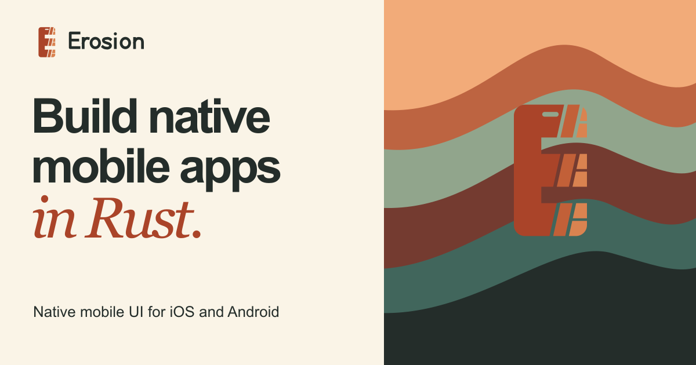

Erosion brand kit¶
The Erosion mark is a rounded phone cut into an E. Three rows of diagonal cuts step left as they descend. Fired-clay slats and split copper tips follow the phone’s right edge, and a single centered camera slot finishes the top.
Download the artwork¶
| Asset | Use |
|---|---|
| Primary logo · SVG · transparent PNG | Light slides, articles, and print layouts |
| Reverse logo · SVG · transparent PNG | Dark slides and photography with a dark, quiet area |
| One-color logo · SVG | Single-ink printing and monochrome layouts |
| Editable PowerPoint mark | Ten individually editable vector shapes |
| Standalone mark · SVG · 512 px PNG | Icons, avatars, and small placements |
| Social card · 1200 × 630 PNG · editable SVG | Link previews, announcements, and presentation covers |
| CSS color tokens | Website and digital campaign styling |


Use the full logo at 120 px wide or larger. Below that, use the standalone mark down to 16 px. Leave at least the height of one shelf of the E clear on every side. The logo SVGs contain paths so they scale and print without installing a font.
Color palette¶
Chalk
#FAF4E7Page and slide backgroundsBasalt
#242D2AText, buttons, dark surfacesOxide
#AA4429Primary mark and links on ChalkCopper
#F2AB79Accent on BasaltPatina
#41665CSecondary text on ChalkShale
#D6E0D5Panels with Basalt textMarketing materials¶
Set headlines in a bold sans serif such as Inter, with Georgia Italic for short emphasis. Use a monospace face for Rust and technical labels. Keep body copy in Basalt on Chalk. The reverse treatment uses Chalk text and Copper accents on Basalt.
